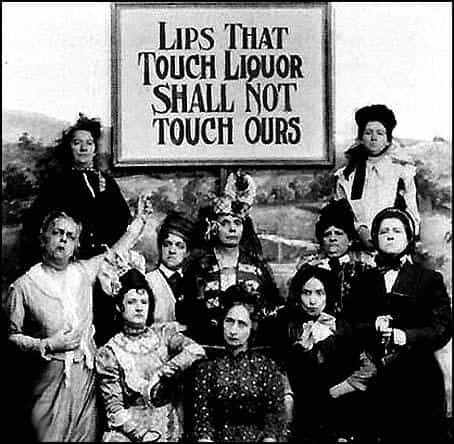
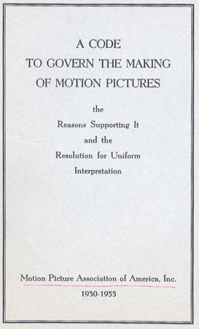

On occasion, I feel the need to defend American history and culture from the constant, constant criticisms and mockeries and deconstructions it faces. You can read more about this here, here, here and here.
However, I am also quite willing to criticize America should it need to be criticized. This is one of those times. There certainly has been a lot of crappiness to come out of American culture, hasn’t there?
“Well what do you expect from a country built on muh slavery and colonialism?!”—Hush! Considering the sheer ubiquity of slavery and conquest, I don’t think it’s fair to say that those are the cause of American cultural suckiness. Taking four times the amount of slaves the American colonies did—and yes, I know it was in Caribbean colonies—certainly hasn’t stopped France from being the vanguard of white culture for centuries.
Instead, I’d like to posit that everything that sophisticated Old Worlders mock about America: it’s Puritanical arts and entertainment, it’s sexual cloddishness, it’s past buffoonery such as Prohibition, and its current fixation on social justice and deconstructionism, to be the fault of not men, but women. And certainly not all women—in fact, the overwhelming majority of American women have nothing to do with this. But rather, a small, extremely vocal minority of American women are the cause of much of this.
These women are the busybody schoolmarms of America—both actual and self appointed schoolmarms. In being something of a student of the arts and culture of my country, I have noticed a repeated trend that I have turned into the title of this article: [Almost] everything that sucks about America comes from a small minority of busybody, Type-A women.
Let us begin with the most literal example of this phenomenon: Prohibition. It is largely forgotten today, but Prohibition and the Women’s Suffrage Movement went hand in hand—the temperance movement was largely female, and had great overlap with the suffragettes.

Granted, this was not merely because women wanted to stifle masculinity—they had some legitimate reasons for it. Women wanted control over their legal assets in addition to the right to vote, because it was at the time in the hands of the men in their lives, some of whom were alcoholics that would literally drink away their life savings.
An understandable motive, but as we all know prohibition wildly increased crime and social decay and was ultimately revoked in 1933, just in time for marijuana to be banned in 1937, again spearheaded by concerns of women being harmed by rampaging substance abusers while working alongside paper kingpins like William Randolph Hearst (feminism and big business have had a very long alliance), which showed that they learned absolutely nothing.
The Arts
What about things such as the Hays Code, which created long-standing stereotypes of “banal, insipid” American films by actually mandating moral standards and forcing happy endings upon movies—stereotypes that still exist to this day?

Of course, the Hays Code was implemented by the studios themselves, enlisting Presbyterian minister Joseph Hays to “clean up” the film industry after protests towards its “degeneracy”. So it’s here that some might ask how this can be laid at the feet of “schoolmarms.” After all, Joseph Hays was a man, yes?
Indeed. However, to understand how I still link schoolmarms and church ladies to this, we will have to look at the state of the church in the 1920s and 30s.
Christianity, particularly Protestantism, has long had a crisis of masculinity. In other words, that men are far less likely to be devoted worshippers than women, and priests were seen as effeminate molly-coddled types that are not in touch with what the average man wants. This is the case today, and was the case 100 years ago.
“Muscular Christianity” arose in response to this starting in the UK and moving to the US and Canada shortly thereafter, in an attempt to get men interested in the church, with a good amount of success starting in the 1860s and extending to around the 1920s. However, by the 1930s, the movement was sort of petering out, and women were once again being the predominant worshipers in Mainline American Christianity.
The point of all this is that while a man was running the Hays Commission, I think it was at least likely that his church had a base that was predominantly female, and thus his decision may have been, at the very least, influenced by them.
From this discussion of women, the church, and the arts, we can branch off two ways, and discuss how this one very specific, odious sort of woman drags down the church, or how said woman drags down the arts and entertainment.
More Arts and Culture
You know what else has a reputation for sucking good and hard? American literature At the very least, the literature in the last 20 years or so, as it was very esteemed from the period immediately following World War One to about the 1980s. And guess who does the most reading nowadays, and has the entire publishing industry catering to them?
Again, this is not entirely their fault—publishing is a business, and a business must cater to whoever is buying, but as an anthropologist, I have observed how publishing companies actively shut out dissenting voices and how this bleeds into the rise of politically correct culture. And yet again, this is not slamming “women” as a big nebulous group, but rather just the uptight, anal-retentive schoolmarm subset of women.
On the subject of politically correct culture, you hardly need me to tell you that workplaces and schools are miserable places, far beyond how much they need to be by the mere virtue of being places nobody willingly chooses to go to. The causes of this misery have been discussed many times links, but now I would have to ask you: who are the guidance counselors in high schools imposing “Zero tolerance” policies that punish the victim of bullying as much as the bully? Who runs Human Resources departments, stifling any camraderie between the “worker drones” that would alleviate some of the drudgery? This workplace culture is itself stifled due to the fear of enraging some humorless biddy.
Actual picture on the human resources page of Central Staff Services, Incorporated
There’s a reason why men and women tuned into watch Mad Men in droves, and it wasn’t to “tsk, tsk” at the “bad old days”.
Speaking of things being turned into service industries for the worst of womanhood… the church! As I said above, the crisis of masculinity in the church has resurged, and there’s apparently no “muscular religion” coming to save us unless you count the efforts done on sites such as this, but those are mere “candles in the darkness”.
The Impact
Some might question the idea of “big bad racist America” being the birthplace of all this politically correct pain-in-the-assery. I would point you to how the stereotype of Americans as being loud, domineering women bossing around miserable husbands, keeping them from igniting that “thumotic spark” is extremely widespread around the world, and has been for decades.
And of course, we can’t forget that fabled American incompetent sexuality. From banning prostitution to creating modern feminism to actually being “sexy” in the most bumblefucking, unsexy fashion when they finally get around to attempting erotica, American women have a good amount to answer for in this field—or more accurately, that same tiny minority that makes the rest look bad.
Don’t think that all of this is just a crank talking—James Thurber knew it when he described his new The New Yorker magazine as being “not for the old lady in Dubuque” and Rudyard Kipling and various other European writers and intellectuals of note knew it—see above.
As someone who is (against all reason), a proud American, I don’t like seeing my countrywomen and my culture spoken of so disparagingly. But as a personal trainer I must point out that the first step of getting someone on the path to improvement is a harsh critical appraisal—and that applies to both the schoolmarm culture of America and America itself.
The constantly demonized “straight white men” have caused problems, but everybody and their grandma points that out. In contrast, me and Steve Sailer, who I linked to above, seem to be the only ones pointing out that women need to shoulder some guilt as well. And when we’ve all shared in guilt, we can begin to fix the problem.
Read More: Prohibition In America: The Intersection Of Women And Capitalists


{kind=link}